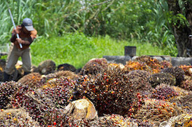
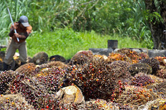
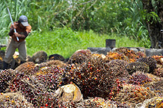

There is a secret hiding in 50% of the consumer goods being sold today.
Palm oil is the most popular vegetable oil on the planet, but its production is driven by the catastrophic decimation of some of Earth’s most precious natural forests primarily in Indonesia and Malaysia.
The oil is produced by the fruits of Elaeis guineensis, an oil palm tree native to west and southwest Africa. In order to scale up production, palm oil companies continue to destroy natural rainforests and burn carbon-rich peatlands to a crisp. This makes land available for millions of oil palms to be planted.
Currently, about 27 million hectares of previously forested land is now covered by oil palm plantations, an area the size of New Zealand.
Endangered species like the orangutan, Borneo elephant, and Sumatran tiger are being pushed to the brink of extinction due to habitat loss.
As a result of the deforested and burned lands for palm oil cultivation, Indonesia surpassed the United States in greenhouse gas emissions in 2015.
Severe labor abuses (child labor, unlawfully long hours, minimal pay, etc.) have resulted from the arduous work performed in palm oil cultivation.
The commercial success of palm oil comes at a huge cost. C16 was founded with the objective of reimagining the means of production of this valuable commodity. By ‘brewing’ fermented palm oil from microbes, we aim to reduce its environmental footprint of palm oil production and protect precious natural land, wildlife, and resources in the process. We have a disruptive technology to solve this problem in a productive, sustainable way. C16 is the first step in producing a serious alternative to conflict palm oil.

Palm oil fruit harvest, Malaysia. Photo by Craig Morey

 
